漫剧创作 / 实际操作记录
《万象点点 · 漫剧制作与剪辑台操作指南》
用原创《雨灯》从空白画布开始，完成剧本、分镜、关键画面与视频生成，再送入剪辑台制作 5.5 秒教学短样片。本文记录真实剪辑、V2
审看、批准交付与画布回写；每步配实际截图，可点图查看原尺寸。
演示作品
《雨灯》 · 9:16 竖屏
最终教学短样片
5.5 秒 · V2 已交付
实际扣款 / 本轮授权
约 ¥7.60 / 上限 ¥50
阅读说明：
本轮完成的是 5.5 秒教学短样片，不是完整剧集或长篇漫剧。步骤 02–30 记录《雨灯》制作与 v1 导出，31–41 使用独立“剪辑功能练习”工程，42–45
记录 V2 修正、审片交付、回写和账单对账。V2 已把片名移到独立文字轨，在 3.5–4 秒可同时显示标题和第二条字幕。源视频为 496×864，导出为
608×1080 / 24 fps；综合响度约 -23.3 LUFS。本机平台按 jobId 核对 35 条生成任务和积分流水，实际合计 76.034483 积分，按 10 积分/元约
¥7.60，低于 ¥50 上限。
01 / 从故事到画布资产
步骤 02–12 · 原创漫剧短样片
02
创建演示工作区
新建独立工作目录
在画布入口选择服务器工作目录，新建文件夹并输入
rainyLightGuide
。此工作区专用于《雨灯》演示，避免混入其他项目素材。
操作入口
新建画布 → 选择工作目录 → 新建文件夹
本步输入
目录名：rainyLightGuide
成功判断：进入工作区后，顶部项目名显示 rainyLightGuide，画布文件可保存在该目录。
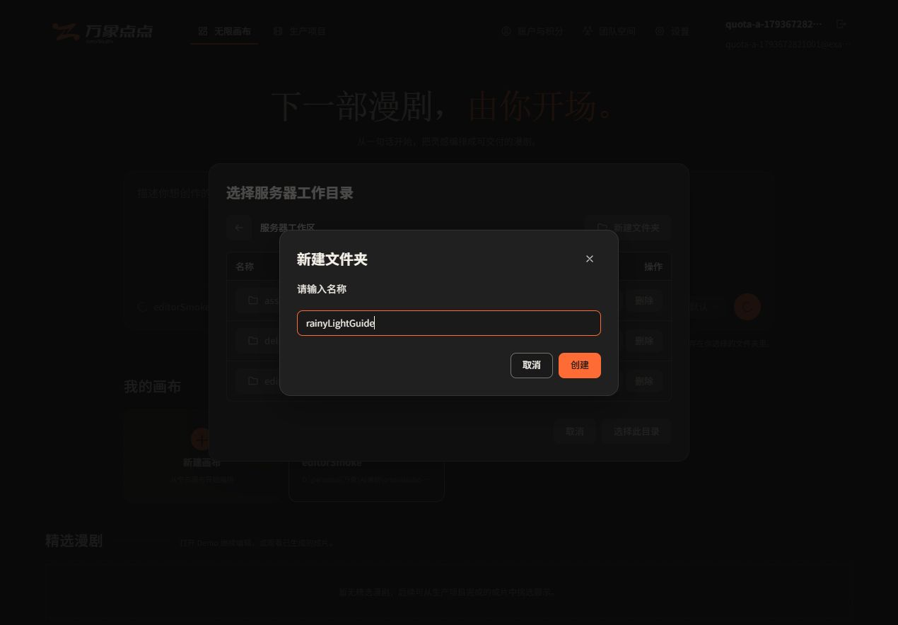
图 02 · 在工作目录中创建独立演示文件夹。点击图片查看原图。
03
打开空白画布
确认从空状态开始
新建画布后，先确认画布区没有旧节点，再从对话助手或画布快捷操作开始创作。该演示画布文件为
画布1.json
。
操作入口
工作区 → 新建画布 → 画布 1
本步状态
初始无节点；右侧为新对话面板
成功判断：中央出现空画布提示，顶部项目名与刚创建的工作区一致。
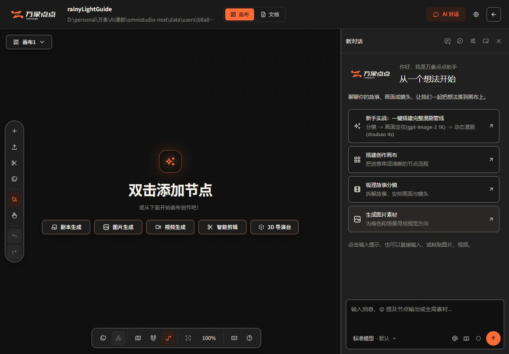
图 03 · 空白画布与对话面板。点击图片查看原图。
04
输入原创故事
提交《雨灯》的短片创作要求
在对话框输入故事目标，让助手先拆解剧本、角色和镜头。下方展示本次原始提示词；补拍时关闭了模型浮层，便于看清输入内容。首次制作在空白画布提交，此处为原工作区完成后的输入步骤复现，未再次发送或生成。
操作入口
右侧新对话 → 输入创作要求 → 发送
故事方向
老城雨夜，一台胸前带暖灯的小巡夜机器人发现迷路的小猫，用灯光陪它回到屋檐，随后继续巡夜。
风格
原创、克制、冷蓝雨夜配暖黄灯光、无对白、9:16 竖屏。
本次原始提示词：请在当前画布建立一部原创竖屏短漫剧《雨灯》。故事：雨夜的小机器人在巷口发现迷路的小猫，用胸前的暖灯为它照路，最后猫咪回到屋檐下，机器人继续巡夜。请先建立简短剧本和2个镜头的分镜文本节点，再生成1张关键画面和1段约4秒的动态漫剧视频；优先使用当前已配置的可用模型和最低成本设置，所有输出写入当前工作区并保留来源关系。
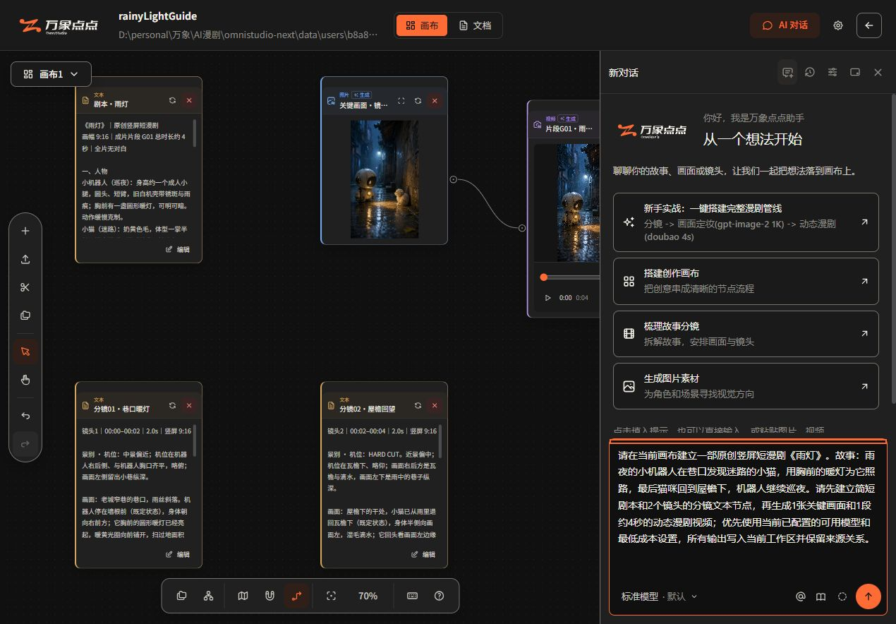
图 04 · 原始提示词输入步骤复现；已关闭遮挡浮层，未再次发送。点击查看原图。
05
检查故事与分镜草案
确认角色、场景与两个镜头
剧本编辑弹窗中，核对画幅、角色外观、情绪基调与镜头时长。当前是约 4 秒的概念短片，两个镜头各约 2 秒；生成结果后续仍须逐镜核对连贯性。
镜头 1
00:00–00:02 · 老巷口建立场景；机器人发现湿透的小猫。
镜头 2
00:02–00:04 · 屋檐下，小猫回头望向机器人，机器人继续巡夜。
对白
无对白；雨声、屋檐滴水与轻微电子声为声音方向。
成功判断：分镜说明能读出镜头时长、机位/景别和主要动作；正式发布前应按实际视频逐镜审看。
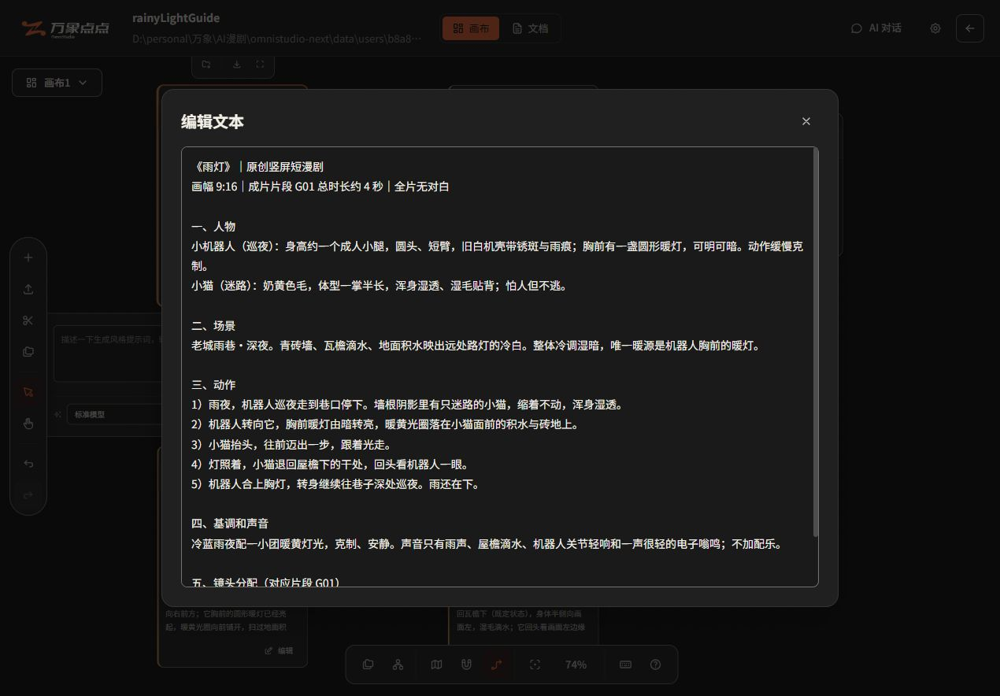
图 05 · 实际画面为“编辑文本”剧本弹窗，不是分镜卡片总览。点击查看原图。
06
核对费用报价
先看任务构成和总价，再提交
本次计划生成一张关键画面和一段短视频。画布助手展示合计预计 75 积分，包含关键画面约 3 积分、视频约 72 积分。按平台页面显示的换算（10
积分约 ¥1），预计约 ¥7.50，低于已授权的 ¥50 上限。
图像
GPT Image 2，1K，竖屏 9:16；预计 3 积分。
视频
Seedance 2.0，480p，9:16，4 秒，开启原生音频；预计 72 积分。
提交前
检查数量、模型、时长、画幅、总积分，以及失败重试的额外成本。
成功判断：费用确认界面显示总计 75 积分，并且不超过本轮 500 积分费用授权。
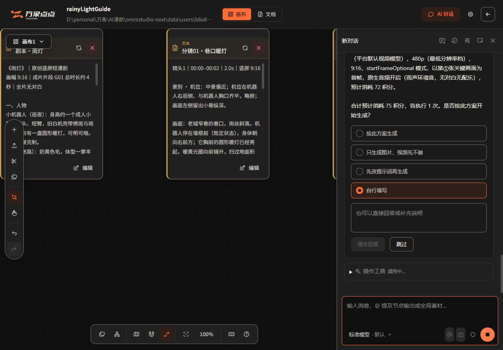
图 06 · 报价与提交确认。最终费用以账户流水结算为准。点击查看原图。
07
等待生成任务
先出关键画面，再提交动态片段
关键画面生成完成后，将其作为参考资产提交视频任务。生成中可观察画布节点和任务状态；只有成功的结果才继续进入剪辑，不要把“已开始”当成“已完成”。
视频参数
Seedance 2.0 · 480p · 9:16 · 4 秒 · 原生音频开启。
参考输入
关键画面 + 两镜头描述；原生环境音，无对白。
成功判断：任务状态变为完成，视频节点可预览；失败时先查看错误细节，不盲目重试。
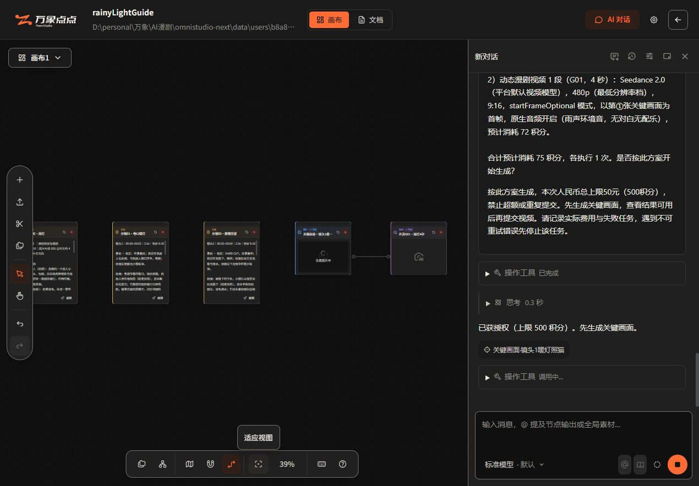
图 07 · 关键画面已就绪，视频生成任务仍在处理中。点击查看原图。
08
审看关键画面
检查主体、灯光与竖屏构图
打开图像节点预览，确认机器人、猫和雨巷关系清楚，暖灯成为视觉焦点。该图作为视频参考资产，并不能替代对生成视频的逐帧检查。
画面方向
9:16 竖屏；冷蓝雨夜与暖黄胸灯形成色温对比。
素材路径
assets/5bb245b8-90b9-4873-8a35-bd7405d0c9b2/imageb1c0e84d-5672-4aac-848a-4aae29934693.png
成功判断：预览图能辨认角色与环境，图像节点状态为成功，可供后续引用。
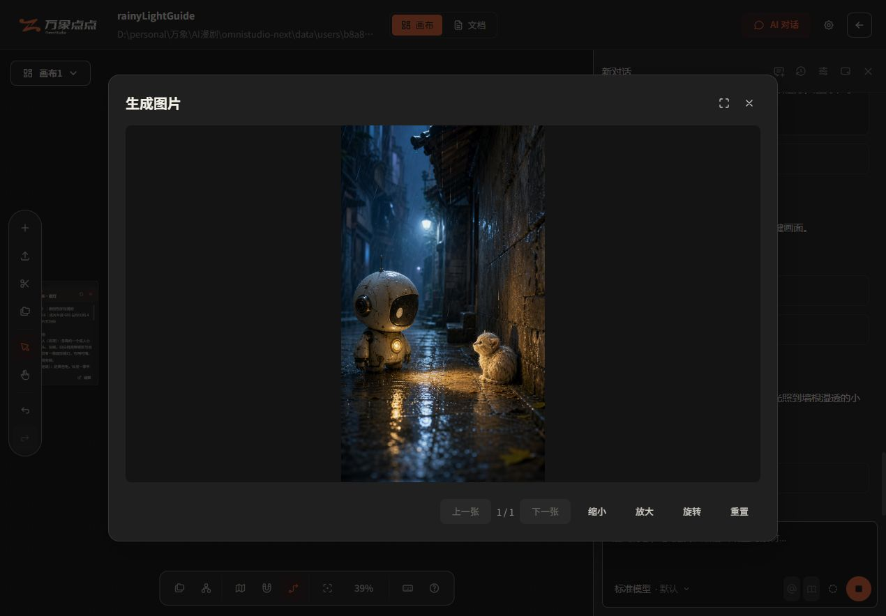
图 08 · 实际生成的关键画面预览。点击查看原图。
09
识别首次视频生成失败
按错误信息修正参考图角色
首次两次视频提交返回 HTTP 400，错误指出“last frame image cannot be mixed with first frame or reference
image”。这属于输入能力组合不兼容，不是生成中断，也没有形成视频成片。按供应商能力，应使用单首帧、双首尾帧或混合参考，不要同时混入不兼容的尾帧和参考图。
失败请求
0217942000888226a861da7d15ce34477456226ae15cbba931b7a
、
021794200220552006c460d0b2d36d003716bcb3522c0d132d4c2
处理方式
按错误提示修正输入组合，再提交；本轮实际扣款复核见步骤 45。
截图保留了两条错误通知。两次失败视频请求在任务与积分流水对账中均为 0 积分；本次后续视频使用完整混合参考数组重提成功。
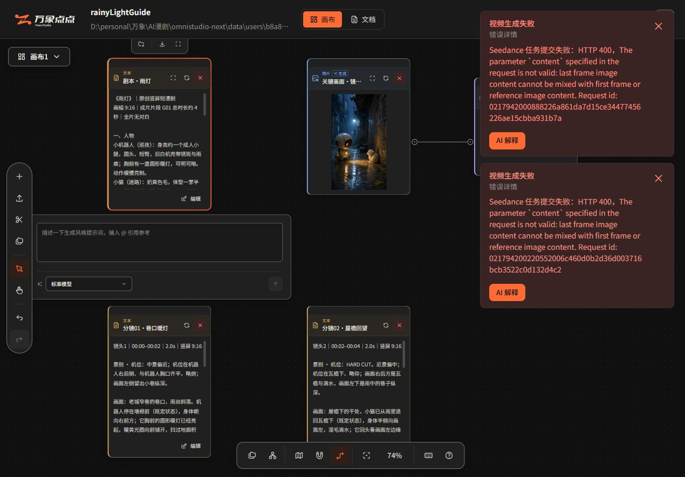
图 09 · 首次提交错误详情。保留错误 ID 供排查，点击查看原图。
10
建立制作项目
单独建项目归档这次演示
在“我的生产项目”新建项目，名称为“雨灯 · 操作指南演示”。项目预算是制作管理额度，和本次实际生成费用不是一回事。实际项目设置的预算为
500 积分（¥50）。新建表单默认预算为 1600 积分，需要手动改成 500；新截图复现了正确的名称和预算输入，拍摄后取消，没有重复创建项目。
项目名称
雨灯 · 操作指南演示
预算上限
500 积分（约 ¥50）
使用范围
素材与成片审片登记；本短样片无需关联剧集。
成功判断：表单预算为 500 积分，创建后在项目详情再次核对。图 10 是输入步骤复现；实际已保存的项目与预算见步骤 30，最终费用见步骤 45。
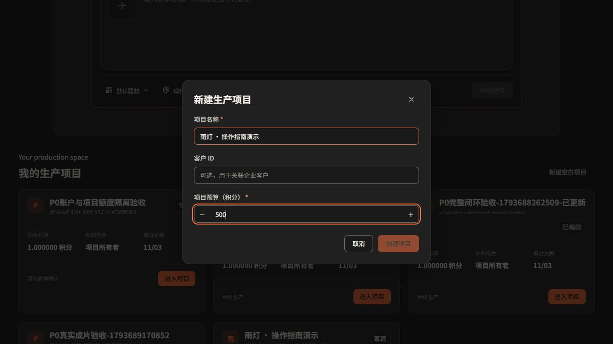
图 10 · 复现项目名称与 500 积分预算的输入；拍摄后取消，未重复创建。点击查看原图。
11
查看视频生成结果
记录成功视频的模型和费用
修正参考输入后，Seedance 2.0 视频任务完成。本步骤生成的源片段约 4 秒，源文件约 1.4 MB，模型输出为 480p
档位竖屏并带原生雨声环境音；最终剪辑成片另见步骤 42。
成功参数
Seedance 2.0 · 4 秒 · 480p · 9:16 · 混合参考模式 · 原生音频开启。
任务状态
1 次成功；另有 2 次输入不合法的请求错误。
费用记录
助手生成时记录关键图 3 积分、视频 72 积分；最终核对账单见交付验收章。
成功判断：画布出现可播放的视频节点，节点记录模型、分辨率、时长和生成费用。
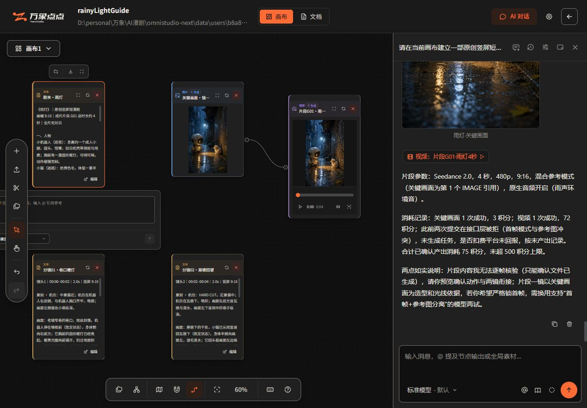
图 11 · 成功结果与生成记录。点击查看原图。
12
确认画布资产
在节点上检查视频并保留来源
回到画布确认视频节点可以播放，画布仍保留剧本、两张分镜说明、关键画面和生成视频的关系。视频素材的相对路径为
assets/686f1d44-a0b6-460b-a420-39d75fe86406/video1e82992a-9952-4a97-9acc-60c84fe3bfe5.mp4
。
视频节点
686f1d44-a0b6-460b-a420-39d75fe86406核对内容
视频已加载，可见画面与原生环境音；保留画布路径与生成记录。
短片只有约 4 秒，无法证明两个镜头都严格按分镜落点。面向发布时还要完整播放并逐镜验收。
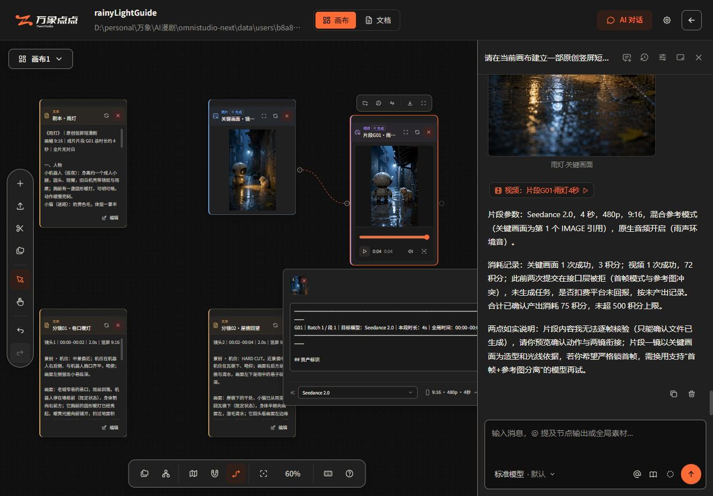
图 12 · 画布节点展示成功视频、参数和生成账目。点击查看原图。
02 / 把画布素材送入剪辑台
步骤 13–18 · 截图止于素材导入与时间线初始状态
13
选择视频节点
由画布节点进入剪辑台
在
画布1.json
选中视频生成节点，再使用左侧剪辑入口。URL 会携带工作区、画布文件与所选节点，剪辑台因此能显示来源画布。
来源节点
686f1d44-a0b6-460b-a420-39d75fe86406来源文件
画布1.json
· 工作区
rainyLightGuide
预期联动
剪辑台的导入素材标注画布来源；返回画布可继续编辑原节点。
成功判断：剪辑台左侧媒体列表出现该 MP4，并显示画布名及来源摘要。
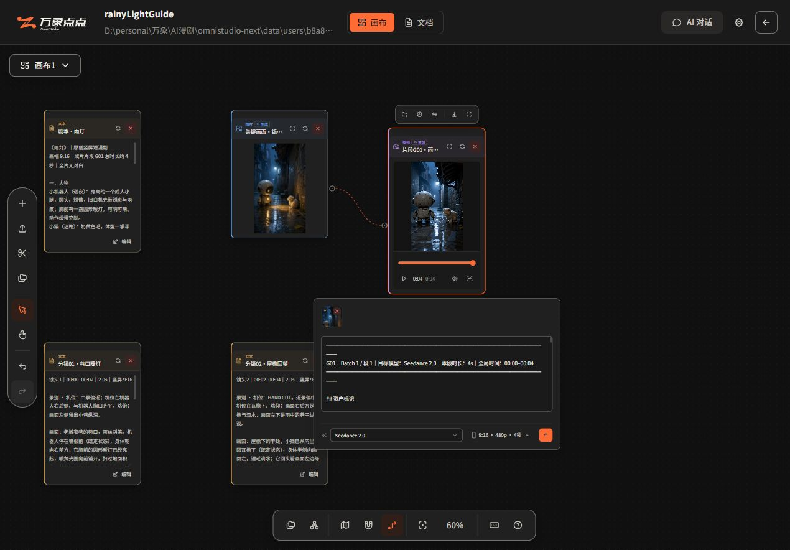
图 13 · 送入剪辑台前选中的视频节点。点击查看原图。
14
冻结导入视频素材
确认来源标识和固定副本
首次进入后，剪辑台把所选视频固定为工程中的素材快照。界面显示“已从画布冻结导入 1 个媒体素材”和来源画布及内容摘要
cdc23f92
。初始工程时间线尚无片段，这是正常状态。
导入结果
媒体列表 1 个视频素材；时长约 4.02 秒，大小约 1.4 MB。
来源摘要
画布 · 画布1.json ·
cdc23f92
初始时间线
0 个片段；还未添加到轨道。
成功判断：素材列表可预览源文件、来源标签可见，工程状态显示已保存。
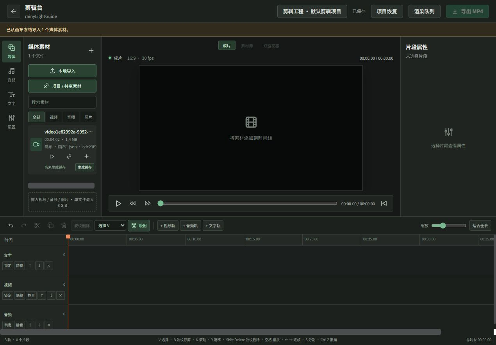
图 14 · 画布素材冻结导入后的空时间线状态。点击查看原图。
15
设定输出规格
选择竖屏交付参数
打开左侧“设置”，设定编辑工程输出参数。这里选择 9:16、24 fps、1080p、标准质量；这只是剪辑导出设置，源视频仍然是
480p，放大设置不会增加源素材真实细节。
封装/编码
MP4 · H.264 / AAC
画幅与帧率
9:16 · 24 fps
输出高度
1080p
质量
标准
成功判断：预览状态显示 9:16 · 24 fps；设置面板保留所选导出规格。
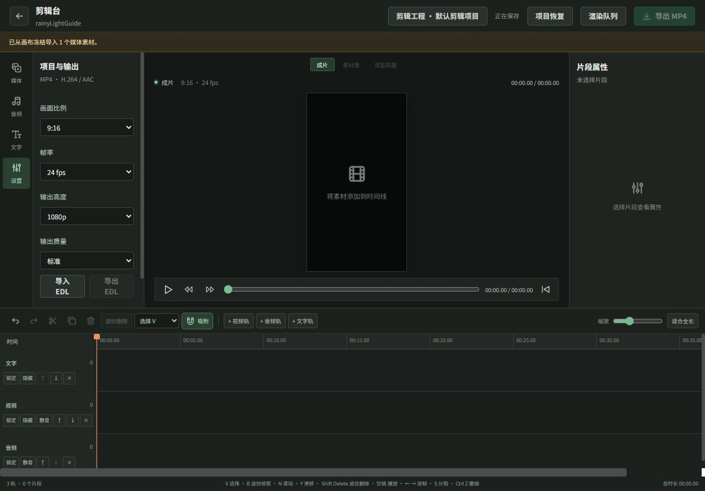
图 15 · 实际设置界面；输出规格不等于原始生成视频分辨率。点击查看原图。
16
在源监视器标记选区
双监视器查看视频并设置入出点
切换“双监视器”，左侧为素材源、右侧为成片监视器。此时源监视器已加载视频；用 I/O 或入点、出点控件确定使用范围。本次将源出点由约 4.083
秒修为 4.0 秒，覆盖整段约 4 秒素材，再点“加入选区”。
模式
双监视器
入点 / 出点
0 秒 / 4 秒
选区时长
00:00:04:00（24 fps 时间码）
快捷键
I 标记入点，O 标记出点，空格播放。
成功判断：选区时长变为 4 秒，加入选区后成片监视器总时长为 4 秒。
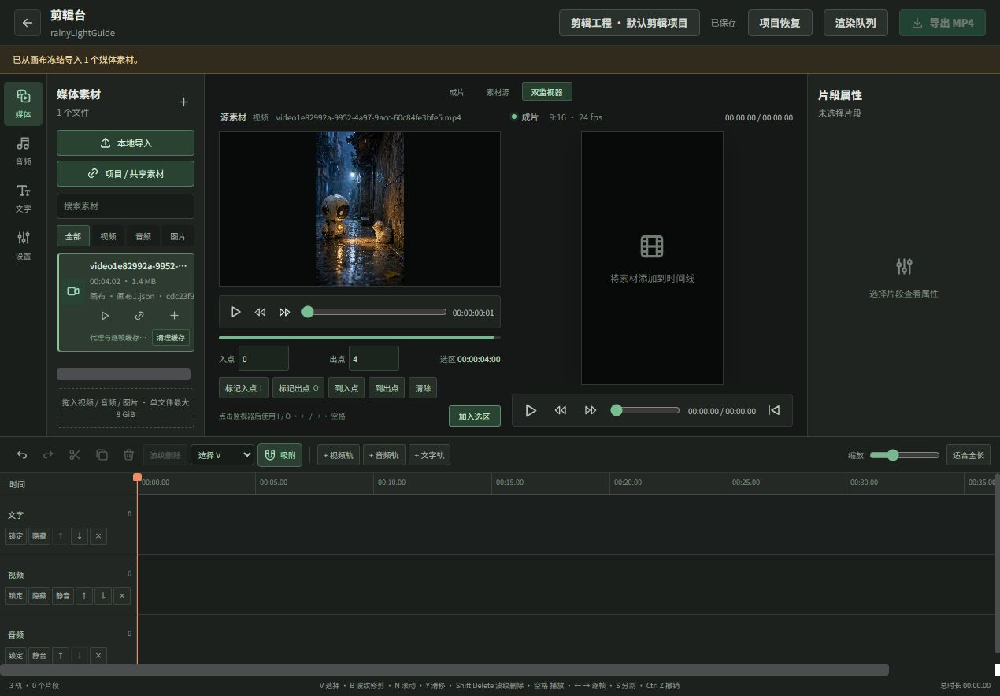
图 16 · 左源右成片的监视器与 4 秒选区。点击查看原图。
17
检查时间线帧缩略图
生成缓存并确认素材可逐帧定位
“加入选区”后，视频片段出现在视频轨道，原生声音随视频保留在同一片段中。生成代理与缩略图缓存后，片段以采样帧缩略图显示，支持逐帧定位与时间线预览。
时间线
视频轨 1 个片段；入点 0、出点 4 秒、起点 0。
缓存状态
代理与逐帧缓存就绪。
帧条说明
缩略图按缩放比例采样，不是每一个编码帧都铺成独立图片格。
成功判断：片段显示连续时间刻度和可识别的帧缩略图，播放头能移动预览画面。
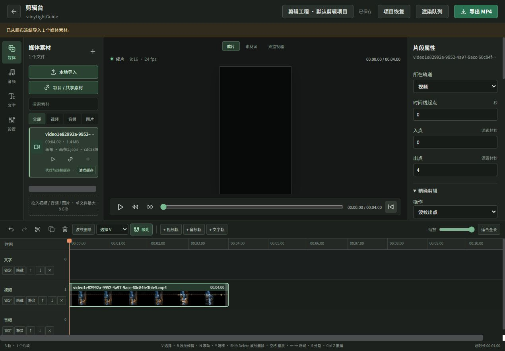
图 17 · 视频缩略帧条、缓存状态及片段属性。点击查看原图。
18
从工作区导入关键图
用项目素材选择器联动图片
点击“项目 / 共享素材”，在工作区依次进入
assets
→ 关键图节点 ID 文件夹，点选 PNG。剪辑台将其固定到当前剪辑工程的媒体列表；截图为选图窗口，导入完成后界面确认“已固定”并显示图片文件。
导入素材
imageb1c0e84d-5672-4aac-848a-4aae29934693.png工作区位置
assets/5bb245b8-90b9-4873-8a35-bd7405d0c9b2/结果
媒体列表增加图片快照；本步骤完成导入，步骤 19 再把它加入片尾。
成功判断：剪辑台提示图片已固定到当前工程，媒体列表从 1 个文件增至 2 个文件。
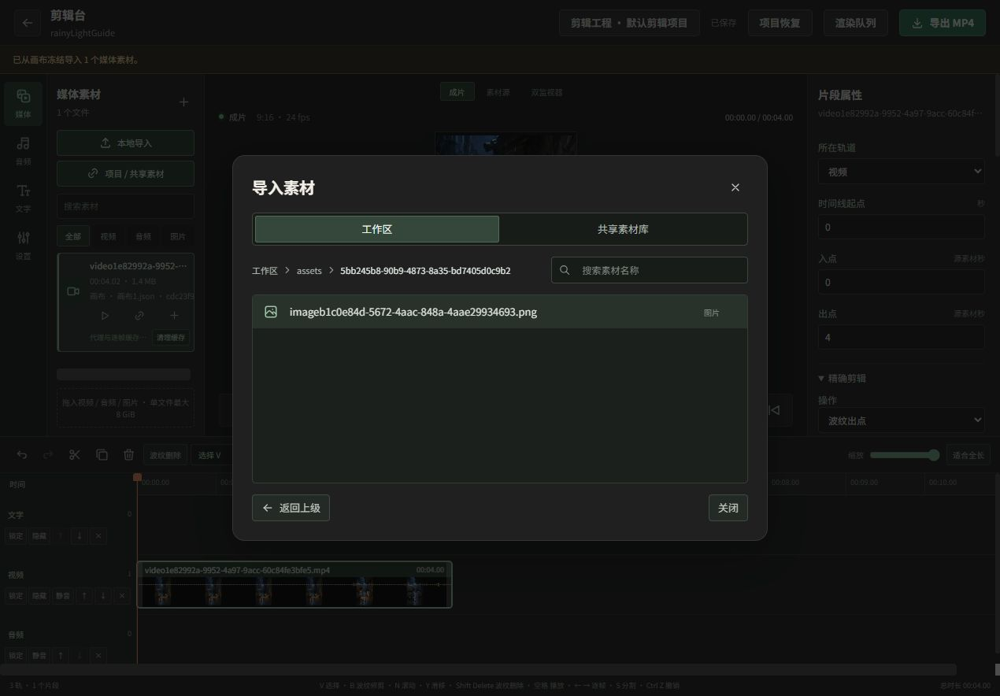
图 18 · 工作区素材选择器中的关键图。点击查看原图。
03 / 完成主样片 v1 剪辑
步骤 19–30 · 9:16 / 24 fps · 约 5.5 秒
19
将关键图作为片尾静帧
在素材尾部接入 2 秒静帧
把已导入的关键图加入视频轨，放到 4 秒视频后面。把静帧的时间线起点设为 4 秒、出点设为 2 秒，并设置 0.4 秒淡出；基础亮度调至 1.05。
片段位置
start 4 秒 · 时长 2 秒。
画面处理
淡出 0.4 秒 · 亮度 1.05。
成功判断：时间线依次出现 0–4 秒视频和 4–6 秒图片片段；图片在片尾监视器可见。
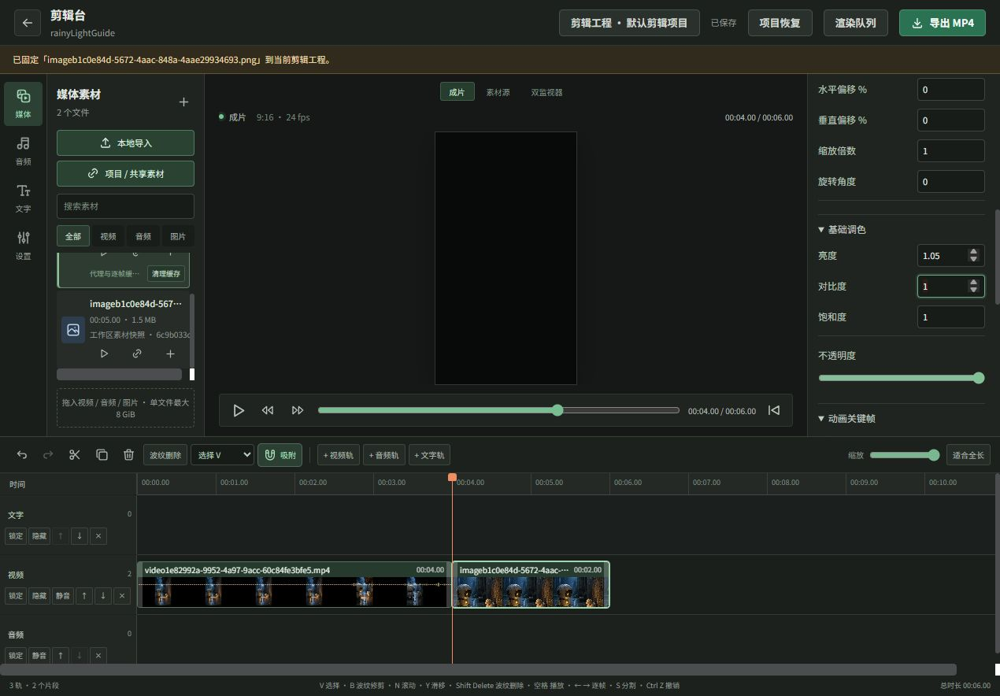
图 19 · 关键图片尾卡设置。画面预览可能随播放头位置变化；点击查看原图。
20
在 2 秒处分割视频
把 4 秒视频拆成前后两段
选中视频片段，把播放头停在 2 秒并执行分割。后续可对第二段单独设置画面关键帧；本步骤只改变剪辑片段结构，不修改源文件。
原片段
源入点 0 秒、出点 4 秒。
分割位置
时间线 2 秒。
结果
两个连续视频片段，后接 2 秒关键图片尾卡；总时长仍为 6 秒。
成功判断：视频轨显示两个片段边界，播放头停在 2 秒切点。
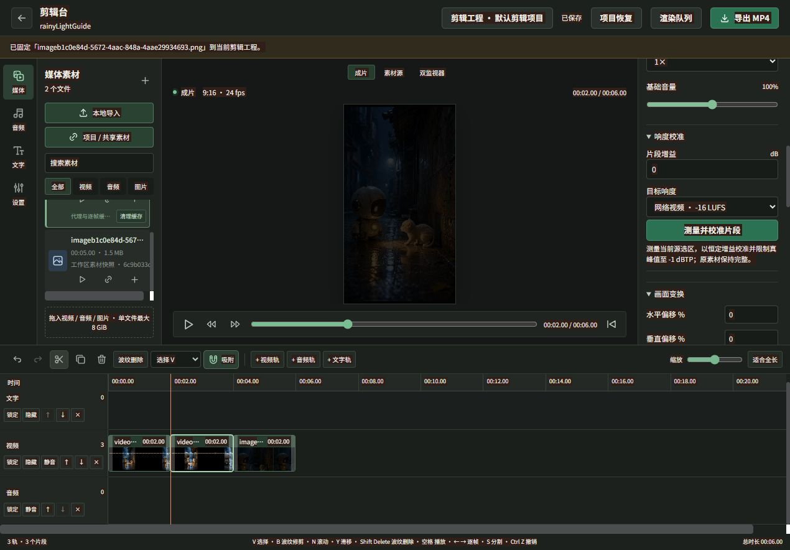
图 20 · 2 秒切点和分割后的时间线。点击查看原图。
21
添加片名《雨灯》
创建两秒标题文字片段
在文字面板输入“雨灯”，添加到文字轨；片段起点 4 秒、时长 2 秒，字号/画幅百分比设为 7，垂直位置设为
48%。这张截图记录标题的初始位置；步骤 27 再把标题提前到 3.5 秒，与片尾交叉淡化对齐。
文字内容
雨灯
起点 / 时长
4 秒 / 2 秒。
字号 / 垂直位置
7 / 48%。
成功判断：成片监视器出现标题，文字片段出现在文字轨且时长正确。
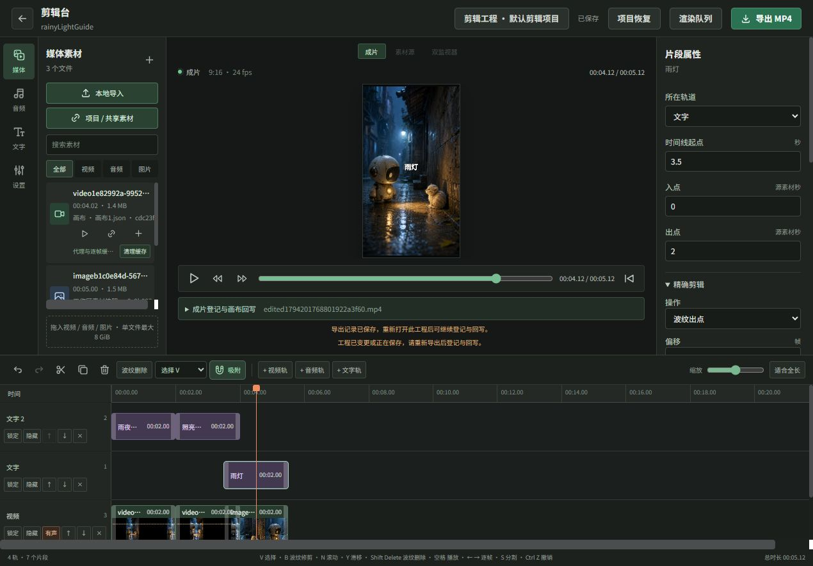
图 21 · 标题文本与片段的初始属性。最终位置调整见图 27。点击查看原图。
22
导入并往返导出 SRT/VTT
把两段叙事字幕放入文字轨
本步骤首次导入时，
rainyLight.srt
只含两条叙事字幕：0–2 秒“雨夜，总有一束光。”，2–4 秒“照亮回家的路。”；再分别导出 SRT 与
VTT，验证字幕交换入口。交付包中的同名文件现已更新为 V2 导出侧车，还包含第三条 3.5–5.5
秒片名“雨灯”；若要重做两条字幕导入，先按下方说明删除第 3 条并另存。
叙事字幕
00:00–00:02、00:02–00:04，共两条。
导出侧车
deliverables/rainyLight.srt
与
deliverables/rainyLight.vtt
；两份各含 3 条，其中第 3 条是片名。
格式
SRT 与 VTT 均已实际导出。
V1 验收发现片名和字幕同轨时发生覆盖。V2
把片名移至独立文字轨后解决画面显示覆盖，但字幕导出仍包含标题片段。若只需两句对白/字幕，需手动删除第三条片名并另存纯字幕文件。
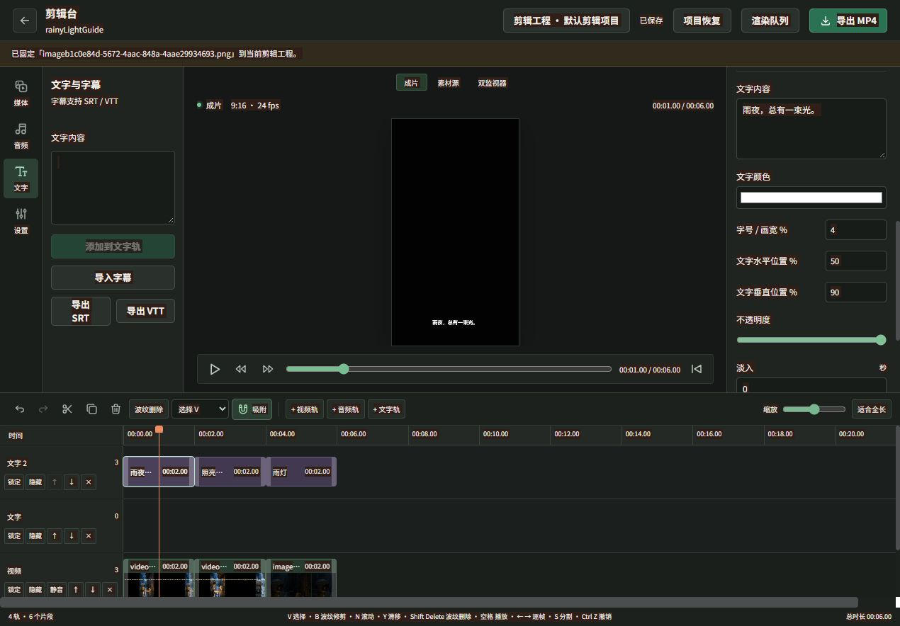
图 22 · 两条叙事字幕已进入文字轨。导出的 SRT/VTT 侧车还包含片名第三条。点击查看原图。
23
给后段画面添加位置关键帧
设置轻微横向移动
选中 2–4 秒视频后段，在“动画关键帧”中选择水平位置 X。片段局部时间 1 秒处添加 0% 点，局部 1.9583 秒处添加 1%
点，形成短促轻微的横向位移。
属性
水平位置 X。
关键帧 1
片段局部 1.000 秒 · 0%。
关键帧 2
片段局部 1.9583 秒 · 1%。
成功判断：关键帧列表显示两个 X 点，时间和数值分别为 1 秒/0% 与 1.9583 秒/1%。
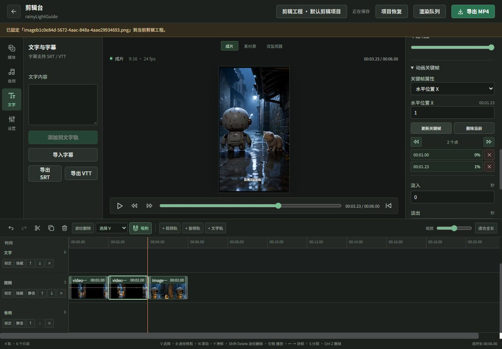
图 23 · X 位置两点关键帧与预览画面。点击查看原图。
24
测量并校准视频片段响度
根据响度与真峰值约束设置增益
对源视频选区测量：原始综合响度约 -30.1 LUFS，真峰值约 -10.5 dBTP。输入约 +9.49 dB 恒定增益后，预计响度约 -20.6
LUFS，仍未达到网络视频 -16 LUFS 目标，因为校准受到 -1 dBTP 真峰值上限约束。
测量值
-30.1 LUFS · -10.5 dBTP。
片段增益
+9.49 dB。
预计结果
约 -20.6 LUFS；未达 -16 LUFS 目标。
这是恒定增益与峰值保护，不是整片动态响度标准化。源素材保持完整；不能因选择目标 -16 LUFS 就宣称已达到该响度。
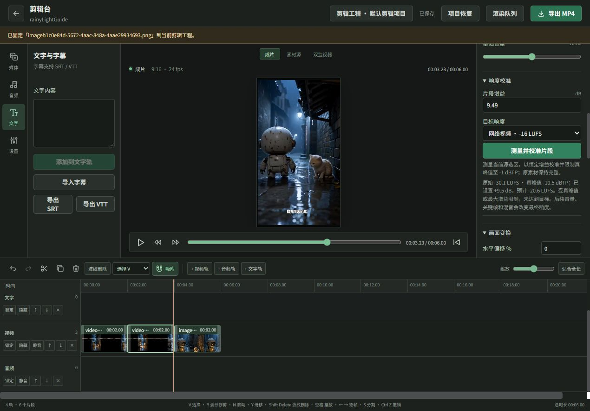
图 24 · 目标响度、增益和真峰值约束结果。点击查看原图。
25
独听检查与输出峰值观察
单独监听片段，确认峰值会受增益影响
在音频控制区对视频素材执行独听播放，并查看输出电平峰值指示。本次实际观察到独听时峰值上升，确认片段增益会影响监听电平；这属于人工监听，不构成完整节目响度验收。
监听方式
视频素材独听。
检查内容
播放时观察输出电平/峰值显示，留意过载与突变。
操作前后应对照监听；没有基于单次峰值观察声称全片真峰值或响度合规。
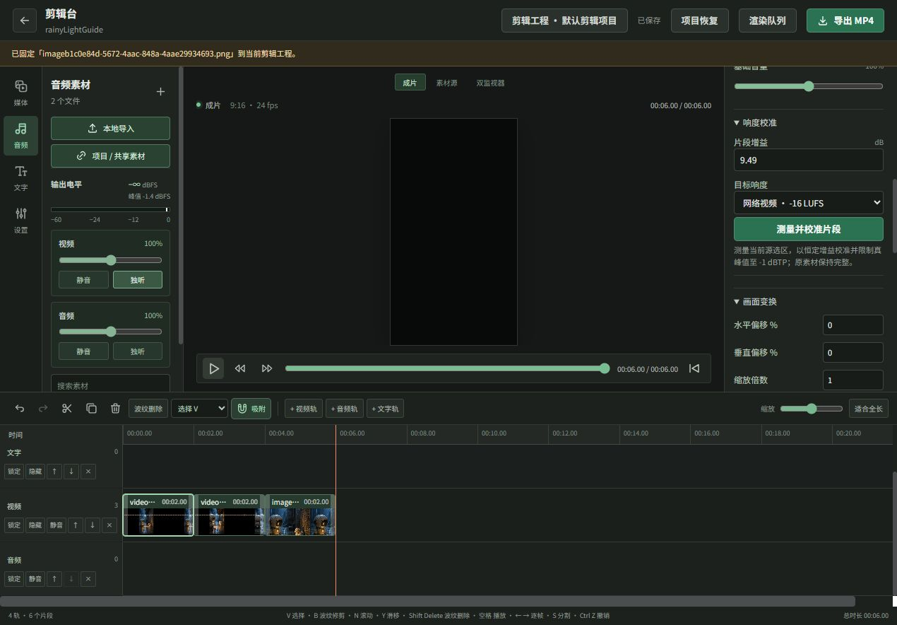
图 25 · 音频面板中的独听、静音和输出电平区域。点击查看原图。
26
导入独立雨声音轨
从源视频抽取音频并在剪辑台混合
本次先使用 FFmpeg 从源 MP4 分离出
rainyAmbience.wav
，再通过本地导入加入独立音频轨。此音频抽取发生在应用外部，不是剪辑台内置分离按钮。为避免原声重复，把含原声的视频轨静音，独立音轨设置增益
+9.49 dB、淡入 0.2 秒、淡出 0.4 秒，并做音量关键帧。
音频文件
rainyAmbience.wav
，来自本次源视频。
轨道设置
视频轨静音；独立音轨 gain +9.49 dB。
关键帧
0 秒 0.85×，2 秒 1×。
淡变
淡入 0.2 秒、淡出 0.4 秒。
缓存
音频波形缓存就绪。
成功判断：音频轨出现独立波形，视频轨静音状态可见，音频关键帧与淡入淡出设置可读取。
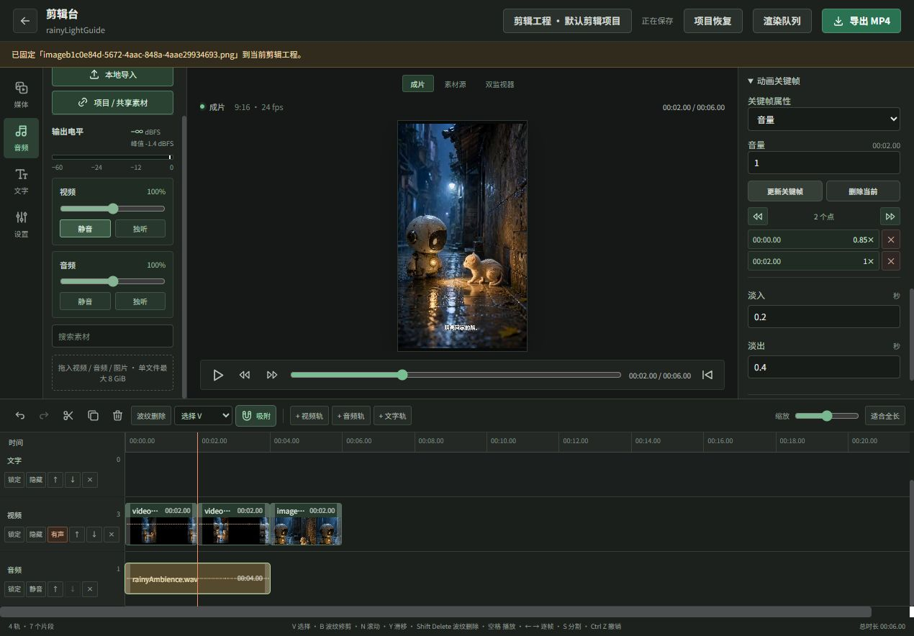
图 26 · 独立音轨、波形、视频静音与音量关键帧。音频源由 FFmpeg 外部分离。点击查看原图。
27
设置片尾交叉淡化并调整标题
重叠 0.5 秒，令片名在片尾过渡时出现
选中尾部关键图与前一段，应用 0.5 秒交叉淡化；系统将尾片起点提前至 3.5 秒形成重叠。随后把《雨灯》标题也移至 3.5 秒，与片尾卡对齐。
转场
片尾关键图进入交叉淡化 0.5 秒。
片尾起点
系统重叠后自动调整为 3.5 秒。
标题起点
最终调整为 3.5 秒。
v1 导出 QA 发现标题与字幕占用同一文字轨时发生重叠/覆盖。最终 V2
已把标题移至空白的独立文字轨，并重新导出复核；修正后的同时显示结果见步骤 42。
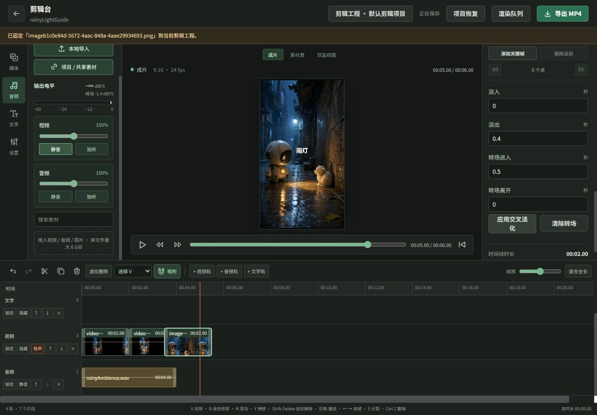
图 27 · 交叉淡化参数与片尾预览；文字轨重叠问题在 v1 QA 中发现。点击查看原图。
28
提交队列并渲染教学样片 v1
等待后台任务明确显示完成
由导出 MP4 提交后台渲染，并在渲染队列中等待任务状态完成。队列截图拍到 1 个完成任务；最终输出记录约 5.5 秒、608×1080、24 fps。成片由
480p 源视频放大输出，分辨率标记不代表新增了源画面的真实细节。
队列
1 个任务已完成。
容器 / 编码
MP4 · H.264 / AAC。
文件参数
约 5.5 秒 · 608×1080 · 24 fps。
版本
教学样片 v1；仅归档审看，不代表已批准。
成功判断：队列显示已完成并提供 MP4 下载；成片参数需以实际媒体探测结果为准。
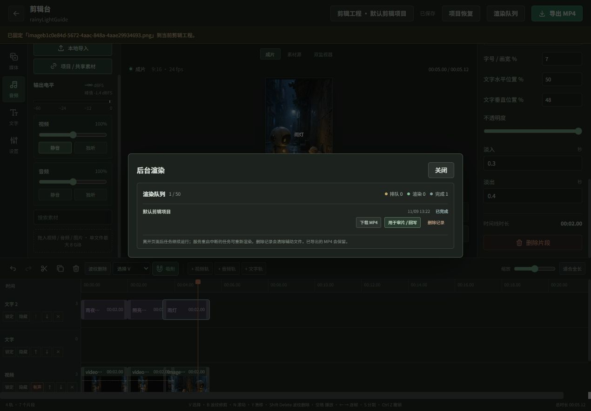
图 28 · 后台队列任务已完成。点击查看原图。
29
把 v1 登记到制作项目
归档可审阅的教学样片
在成片登记区选择“雨灯 · 操作指南演示”项目，成片命名为“雨灯 · 教学样片 v1”，未关联剧集。此动作将样片归档用于审片；v1
尚未获批准，也不代表审核流程或项目交付闭环完成。
项目
雨灯 · 操作指南演示。
成片名称
雨灯 · 教学样片 v1。
剧集
不关联剧集。
状态
本步骤为 v1 登记；V2 审片与最终交付见步骤 42–44。
图中保留了登记与回写入口；不要将“已登记”或“已下载”解释成“已批准/已交付”。
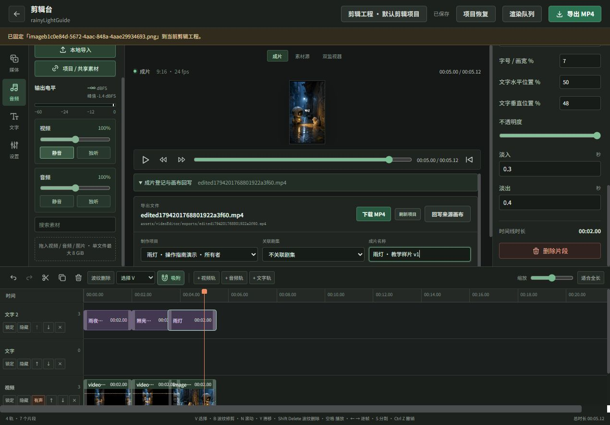
图 29 · 成片登记信息与项目选择。点击查看原图。
30
复核制作项目预算
确认项目实际配置为 500 积分
打开“雨灯 · 操作指南演示”项目详情页，顶部显示项目编号、所有者和预算 500.000000
积分。本轮实际费用仍须单独从账户流水核算；项目预算是上限配置，并非已消费金额。
项目编号
f8e5be54-e4bc-433c-ac4b-6ff076ccf7d1项目预算
500 积分（本轮费用授权上限 ¥50）。
项目状态
草稿。
成功判断：项目详情明确显示预算 500 积分，和初始创建表单中默认 1600 积分区分。
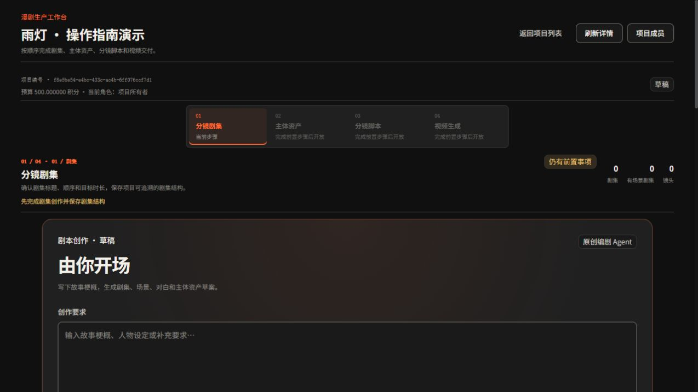
图 30 · 项目详情中可见 500 积分预算及项目编号。点击查看原图。
04 / 在独立工程练习时间线工具
步骤 31–41 · “剪辑功能练习” / 16:9 / 30 fps
以下步骤使用独立的“剪辑功能练习”工程和同一源视频，避免修改《雨灯》主样片。源素材入点 0、出点 3 秒；在 1.5
秒处分割为两个片段。完成每项操作后按步骤说明撤销或保留，使练习结果可核对。
31
用波纹修剪延长出点
+1 帧并观察后续片段顺移
在练习工程选中前段，精确剪辑模式选“波纹出点”，偏移 +1 帧并应用。30 fps 下出点变为 1.5333 秒，后段随之向后顺移，总时长增加到 3.0333
秒；随后撤销回到原状态。
工程设置
16:9 · 30 fps。
修剪结果
前段出点 1.5333 秒 · 总长 3.0333 秒。
复原
已执行撤销。
成功判断：前段多 1 帧，后段整体后移，总长随之增加；撤销后返回 3 秒。
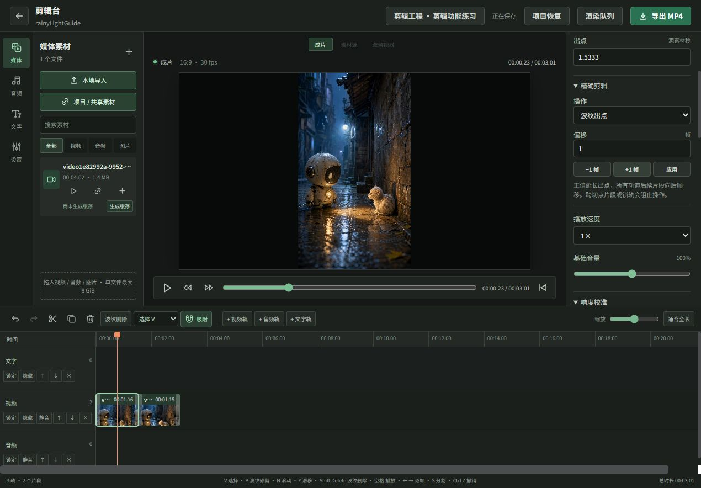
图 31 · 波纹出点 +1 帧后的结果（截图位于撤销前）。点击查看原图。
32
用滚动修剪移动公共切点
把一帧时长从后段移到前段
选择“滚动右切点”，偏移 +1 帧并应用。切点移动一帧，前段增加 1 帧、后段减少 1 帧，两段仍首尾相接且总时长保持 3 秒。
操作模式
滚动 N。
偏移
+1 帧。
结果
前段约 1.5333 秒、后段约 1.4667 秒；总长 3 秒。
成功判断：公共切点移动，而总时长不变。
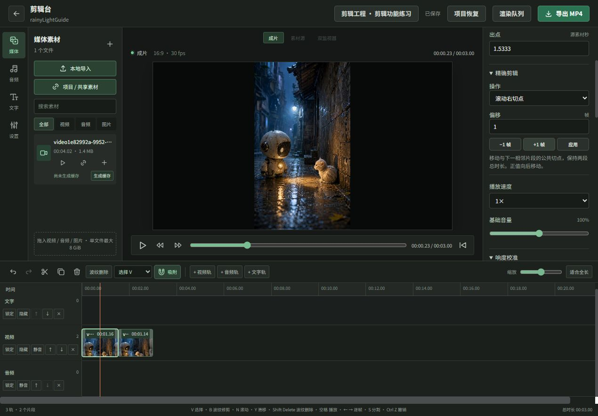
图 32 · 滚动修剪后的切点与 3 秒总长。点击查看原图。
33
用滑移修剪改变源素材范围
保留片段在时间线的位置和时长
选择“滑移源素材”，偏移 +1 帧并应用。片段在原视频中的入点与出点各向后移一帧，时间线起点和持续时长保持不变。
操作模式
滑移 Y。
源入点 / 出点
0.0333 秒 / 1.5667 秒。
时间线
位置、长度不变，显示后续源画面。
成功判断：源入出点都偏移一帧，时间线上的片段边界不动。
图 33 · 滑移后的源素材入出点。点击查看原图。
34
设置恒定 2× 速度
验证速度改变片段时长
将前段速度设为 2×，原约 1.5333 秒的片段变为约 0.7667 秒。练习中实际执行撤销、重做、再次撤销，以核对历史状态的正反向恢复。
速度
2× 恒定速度。
片段时长
约 0.7667 秒。
历史操作
撤销 → 重做 → 再撤销；最终回到正常速度。
成功判断：2× 时长缩为一半，撤销/重做能返回相邻状态。
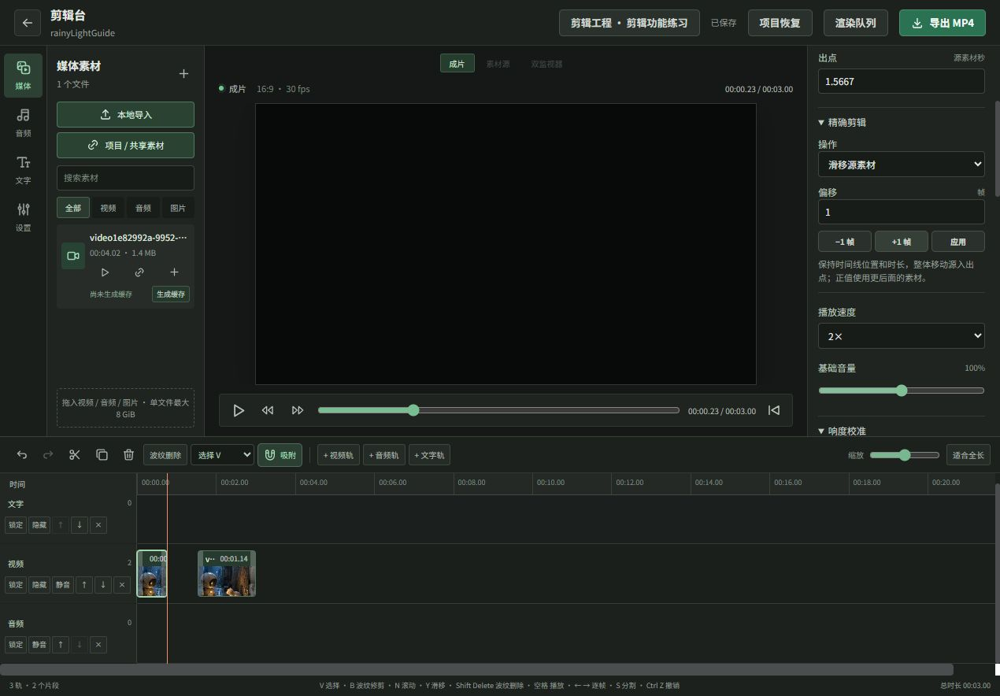
图 34 · 2× 速度及缩短后的片段。点击查看原图。
35
复制并删除时间线片段
检查复制命令后清理副本
选中前段执行复制，时间线上生成同源副本；复制片段可能与原片段重叠，需检查位置与选中状态。本次将副本删除，练习工程不保留该复制结果。
操作
复制片段 → 确认新片段 → 删除副本。
注意
重叠副本不一定扩展总时长，检查片段起点再继续编辑。
成功判断：复制后片段数增加，删除副本后片段数恢复。
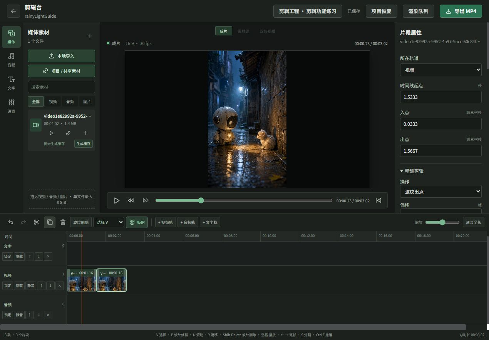
图 35 · 复制后副本出现在时间线并选中。点击查看原图。
36
波纹删除前段
删除后段前空隙并同步前移
在 1.5 秒练习切点附近选择前段，执行波纹删除。前段移除，后段移至时间线 0 秒，剩余时长约 1.4667 秒；再撤销恢复两段工程。
命令
波纹删除（Shift + Delete）。
删除后
后段起点 0 秒 · 总长 1.4667 秒。
复原
已撤销。
成功判断：删除产生的空隙被消除，后续片段前移；撤销后片段返回原位。
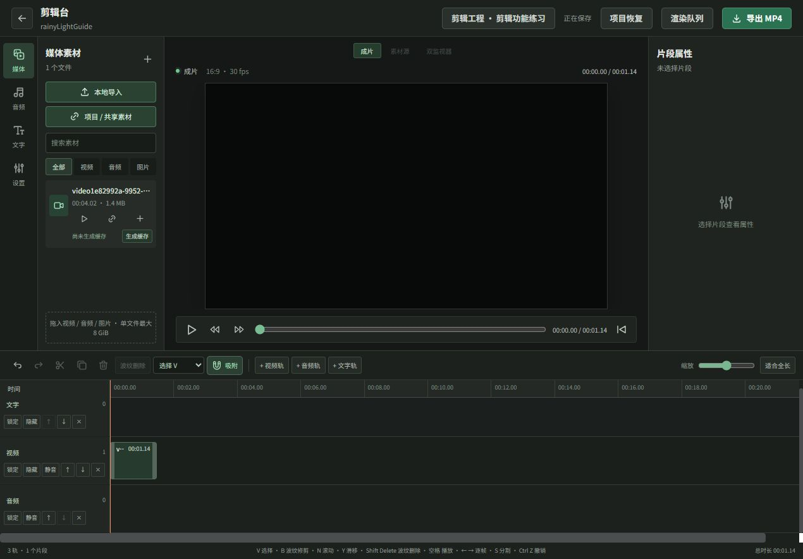
图 36 · 波纹删除后的单段时间线结果（截图位于撤销前）。点击查看原图。
37
锁定轨道保护素材
检查锁定后编辑控件状态
锁定视频轨后，片段属性与编辑按钮变为不可编辑；完成检查后解锁轨道继续操作。
保护动作
点击轨道锁定。
验证
片段编辑控件禁用，轨道属性显示已锁定。
恢复
解锁后继续编辑。
成功判断：锁定和解锁状态均可见，解锁后操作能力恢复。
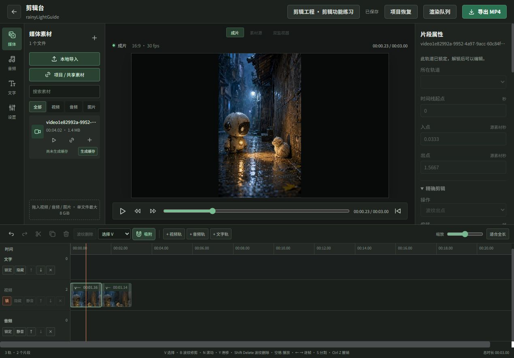
图 37 · 轨道已锁定，片段属性不能编辑。点击查看原图。
38
往返验证纯画面 EDL
导出再导入两个视频片段
在仅含纯画面片段、无文字音频效果的练习工程中导出 EDL 到
deliverables/practice.edl
，再通过剪辑台导入该 EDL。导入后实际核对为 2 个视频片段、3 秒总长。
文件
deliverables/practice.edl
。
导出条件
纯画面顺序片段，无字幕、音频、变速或重叠。
往返结果
2 个片段 · 3 秒。
成功判断：重新导入后片段数、次序和总时长符合原练习时间线。
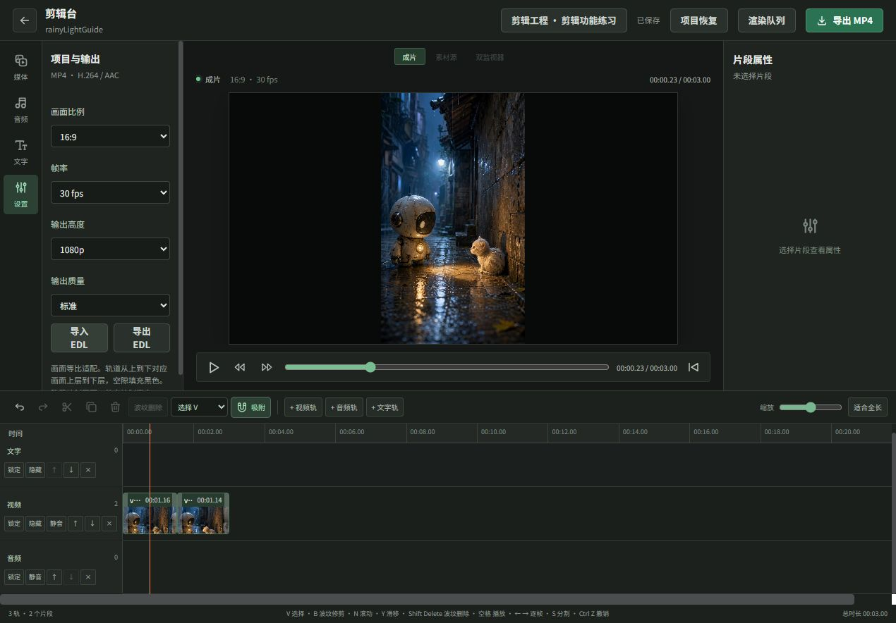
图 38 · 纯画面时间线及 EDL 导入/导出入口。点击查看原图。
39
从历史备份恢复练习工程
确认选择备份并复核恢复状态
打开“项目恢复”，选择最新历史备份并执行恢复。恢复前应用会先备份当前工程，素材文件不会删除。恢复完成后实际复核：原后段名称恢复，时间线上仍有
2 个片段、总长 3 秒，工程状态为已保存。
恢复前保护
当前剪辑工程另存备份；素材文件保留。
恢复结果
后段名称恢复 · 2 个片段 · 3 秒。
截图说明
截图展示项目恢复对话框和备份选择；操作完成后的状态由实跑复核。
成功判断：恢复后的工程数据与所选备份一致，并显示已保存；素材文件仍可用。
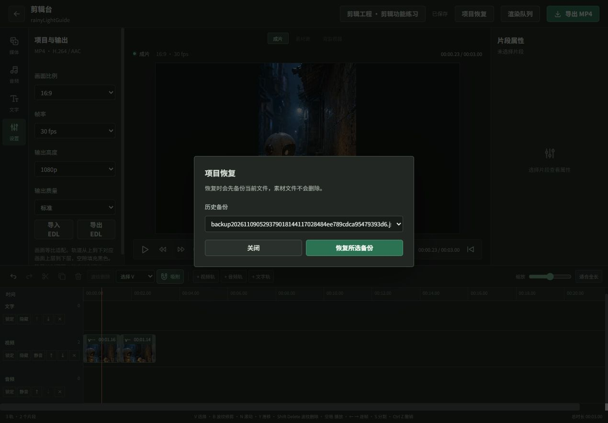
图 39 · 恢复对话框和所选历史备份；完成后已核对 2 段 / 3 秒。点击查看原图。
40
练习轨道命名、排序与显隐
用轨道控件管理画面层次
把练习工程的视频轨改名为“练习画面”，执行下移、上移来检查层次操作，再隐藏轨道并恢复显示。隐藏时监视器不呈现该轨画面，但时间线片段仍保留；图中记录隐藏状态，复原后继续下一步。
名称
练习画面。
排序
下移一次，再上移恢复。
显隐
隐藏 → 恢复显示；素材和片段未删除。
成功判断：轨道名称改变、层次按钮能调整顺序，隐藏时画面消失，恢复后素材重新显示。
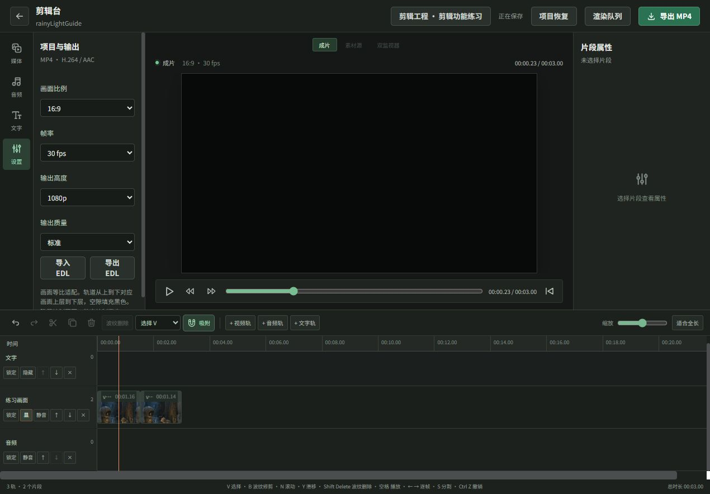
图 40 · 隐藏轨道时监视器变黑，时间线的两个片段仍然保留。点击查看原图。
41
重新链接源视频并重建缓存
保持剪辑位置，替换素材链接
在媒体素材上使用重新链接，选择本次同一个生成源视频。完成后核对时间线仍保留两个片段、总长 3
秒，画面能预览；随后重新生成代理与缩略缓存并确认成功。
重新链接对象
本次《雨灯》生成源 MP4。
时间线核对
2 个片段 · 3 秒，原有位置保留。
缓存结果
重新链接后实际生成代理缓存成功。
本次缓存任务很快完成，未能实际验证“取消缓存任务”。该项不列为本轮通过。
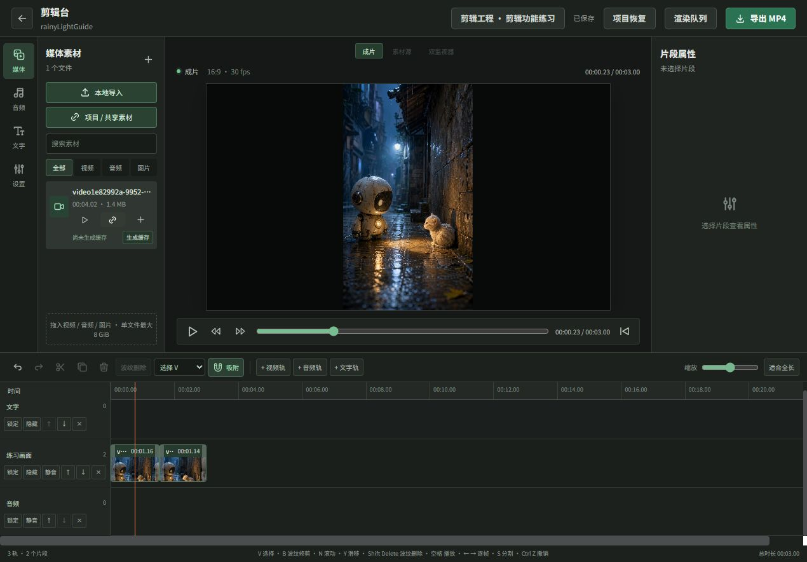
图 41 · 重新链接完成后的时间线与媒体素材。缓存成功在随后操作中确认。点击查看原图。
本组没有覆盖完整特效库、速度曲线、EQ/降噪/自动闪避、多声道混音、协同编辑、长时 4K 压力或全平台部署验收。恒定 2×
速度与关键帧线性变化不等同于速度曲线或专业混音母带。
05 / V2 修正、审看与交付
步骤 42–45 · 5.5 秒教学短样片
42
修正标题分轨并审看 V2
让标题与第二条字幕同时可见
回到《雨灯》主样片工程，把《雨灯》片名移到空白的独立文字轨，再导出 V2。实际审看 3.5–4
秒交叉淡化区间：片名与第二条字幕能同时显示，过渡正常。该成片仍然只有 5.5 秒，作为操作指南教学样片交付。
修正内容
片名独立文字轨；字幕保留原时间段。
导出规格
5.50 秒 · 608×1080 · 24 fps · MP4 / H.264 / AAC。
版本与校验
V2；文件 SHA-256 与下方交付记录一致。
成功判断：3.5–4 秒能同时看到片名和字幕，视频可完整播放，媒体参数与登记文件一致。
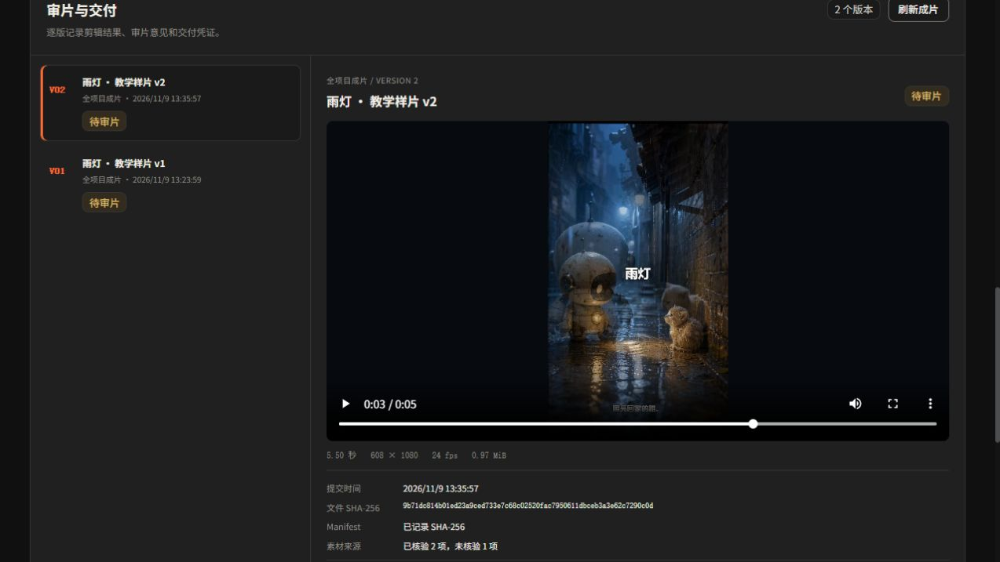
图 42 · V2 在交叉淡化区间的审看片段。点击查看原图。
43
批准 V2 并确认交付
保留版本历史与审片意见
在制作项目“审片与交付”中选择 V02，记录标题已分轨、3.5–4 秒同显与交叉淡化正常的审片意见，批准后确认交付。本轮 V02 最终显示已交付，V01
保留为退回修改；这标志本次教学样片流程完成，不代表完整剧集已经制作完成。
最终状态
V02 已交付；V01 退回修改。
交付下载
MP4、剪辑工程与 manifest。
manifest 语义
登记时的快照，其 status 为 review，不随后续审批自动更新；最新审批状态以项目版本记录为准。
成功判断：项目中 V02 显示已交付，审片意见和文件校验记录可查，旧版修改记录保留。
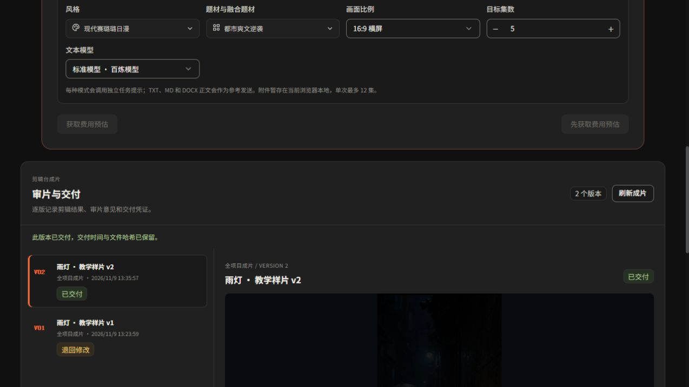
图 43 · V02 已交付与 V01 退回修改的版本记录。点击查看原图。
44
把最终成片回写来源画布
在画布中继续使用剪辑结果
从剪辑台最终成片区域选择“回写来源画布”。返回
画布1.json
后关闭对话面板并适应视图，右下出现完整成片视频节点。实际读取磁盘画布确认共 6 个节点，其中包含
editorResult
，说明生成素材与剪辑成片已在同一画布联动。
来源画布
rainyLightGuide / 画布1.json
。
写回结果
新增可预览的成片视频节点。
持久化核对
共 6 个节点，包含 editorResult。
成功判断：画布可见新成片节点，重新读取画布文件仍保留该节点。
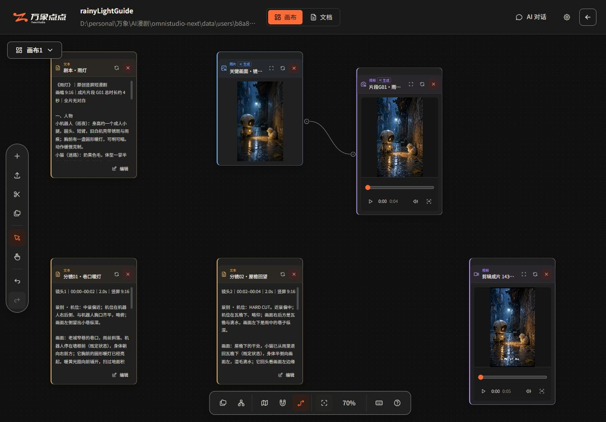
图 44 · 最终成片已回写来源画布，原有剧本、分镜与生成素材仍保留。点击查看原图。
45
逐任务核对费用账单
用工作区任务与实际流水确认总额
本轮按
rainyLightGuide
工作区筛出 35 条生成任务，用 jobId 将
generationJobs
与
creditLedger
逐条匹配。所有扣款金额一致：文本 31 次合计 1.034483 积分、图片成功 1 次 3 积分、视频成功 1 次 72 积分、视频失败 2 次均为 0 积分。
实际合计
76.034483 积分。
换算金额
按 10 积分/元约 ¥7.60，低于 500 积分 / ¥50 上限。
核对证据
costRecord.json 逐任务记录
。
截图范围
图中为账户近期流水的部分记录，金额保留两位；精确累计以 JSON 逐任务对账为准。
成功判断：35 条任务的实扣金额与流水一致，失败视频没有实扣，实际总额未超过授权。
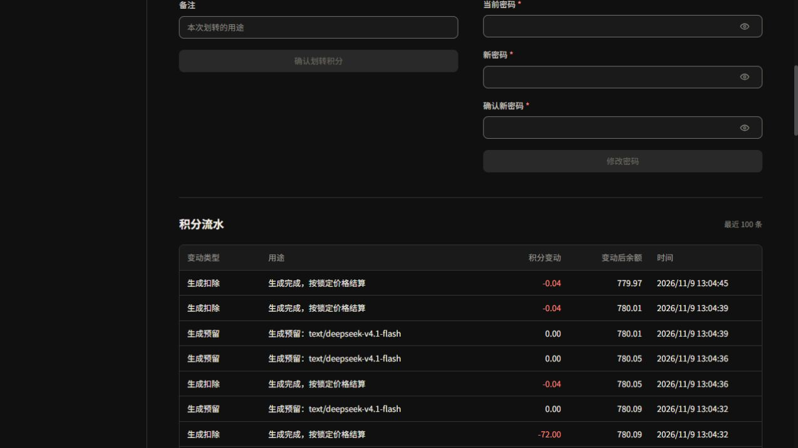
图 45 · 账户近期流水。截图只展示部分流水；精确 35 条任务与总额见 costRecord.json。点击查看原图。
本轮交付与技术记录
完成范围是《雨灯》5.5 秒教学短样片及一组独立剪辑练习。可在下方播放最终 V2，并对照文件校验值识别版本。
最终文件
deliverables/rainyLight.mp4
· V2。
SHA-256
9b71dc814b01ed23a9ced733e7c68c02520fac7950611dbceb3a3e62c7290c0d画面
608×1080 · 24 fps · 5.5 秒。源生成视频 496×864，存在上采样，不是原生 1080p 生成。
音频
综合响度约 -23.3 LUFS；未达到网络视频 -16 LUFS 参考目标。片段恒定增益不能代替整片动态混音和母带处理。
字幕
归档的
SRT
和
VTT
均含 3 条：两句叙事字幕与 3.5–5.5 秒的片名“雨灯”。V2
已解决画面上片名与字幕同轨覆盖；如需仅叙事字幕，需删除第三条标题后另存纯字幕文件。
工程 / manifest
剪辑工程快照与离线时间线/媒体可供后续恢复。manifest 是登记时快照，status 为 review，不随后续审批自动更新；V02 当前审批与交付状态见
deliveryReceipt.json
（delivered）及项目版本记录。
实际总费用
76.034483 积分，约 ¥7.60。
已按 jobId 核对 35 条任务：31 次文本共 1.034483 积分、1 次图片 3 积分、1 次成功视频 72 积分、2 次失败视频 0
积分，均与本机平台积分流水一致。低于本轮 ¥50 / 500 积分授权，证据见
costRecord.json
；图 45 只展示近期部分流水。
本次通过的是短样片流程与文中列出的实际操作。未因此完成完整剧集、多镜头长篇一致性、长时 4K
压力、完整特效库、速度曲线、EQ/降噪/自动闪避、多声道、实时协作或干净目标机部署验收。缓存取消因任务快速结束未成功触发，不列为通过。
查看完整功能参考与限制
已实现能力、使用入口、实际限制与尚未实现项。
→
没有找到匹配步骤。